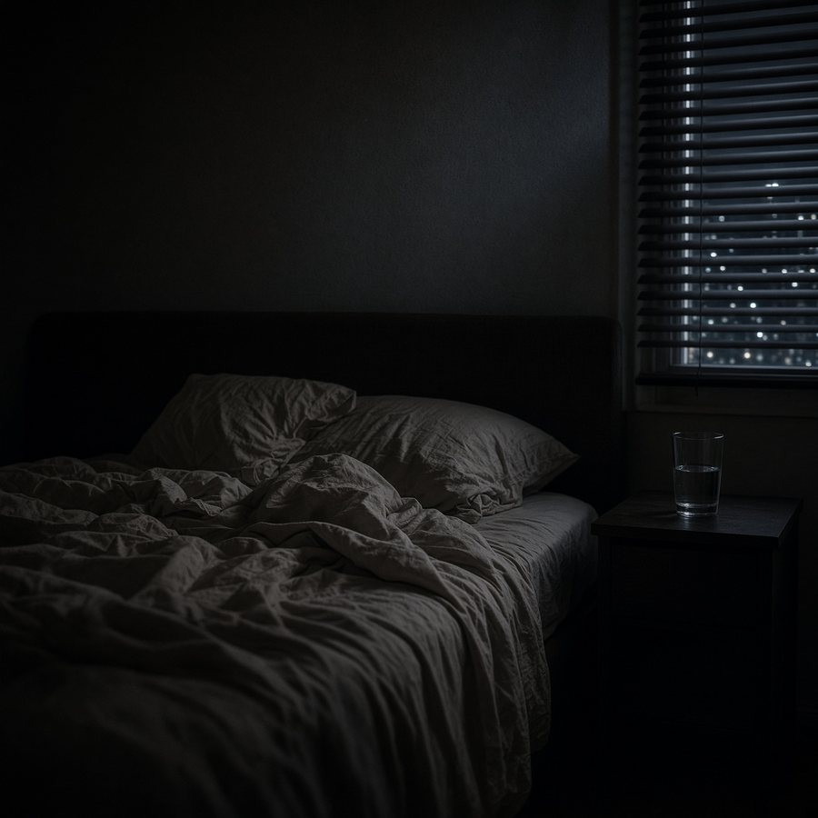
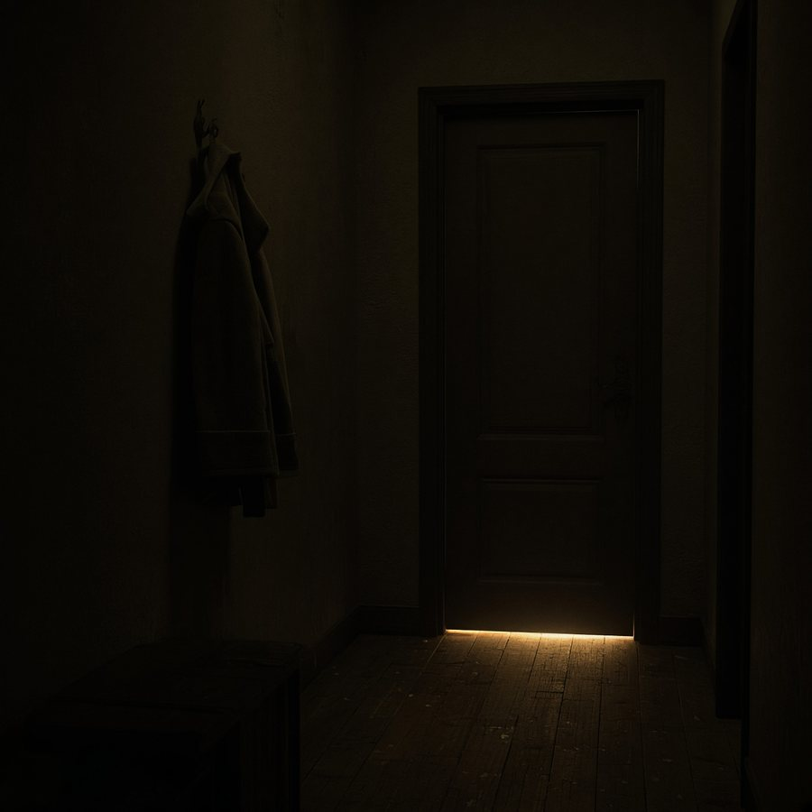
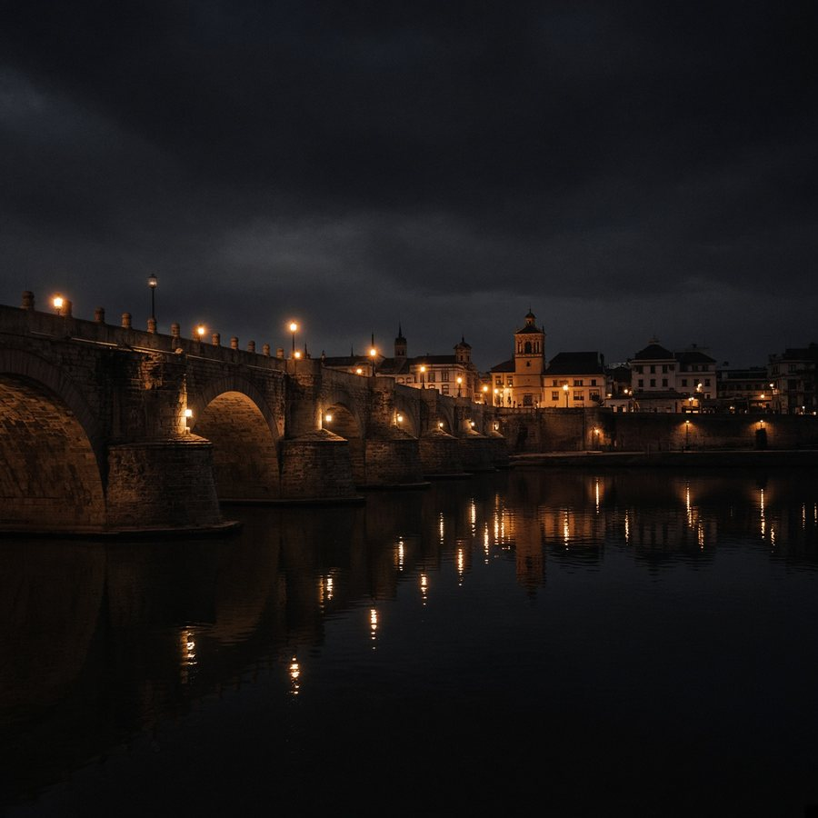

Dormir es un país
Nervión & Heliópolis · T02 · E04 · 4:22
Podcast independiente. Sevilla y Betis.
Jornada, derbi y calle.


Nervión & Heliópolis · T02 · E04 · 4:22

Nervión · T01 · E07 · 3:52

Heliópolis · T01 · E03 · 0:46
Dos colores. Una ciudad...

El barrio del este

El barrio del sur

Cuando la ciudad se...
Todos los programas, ordenados por fecha y equipo.
Área editorial y de producción.
Añade la web a tu pantalla de inicio desde el navegador.